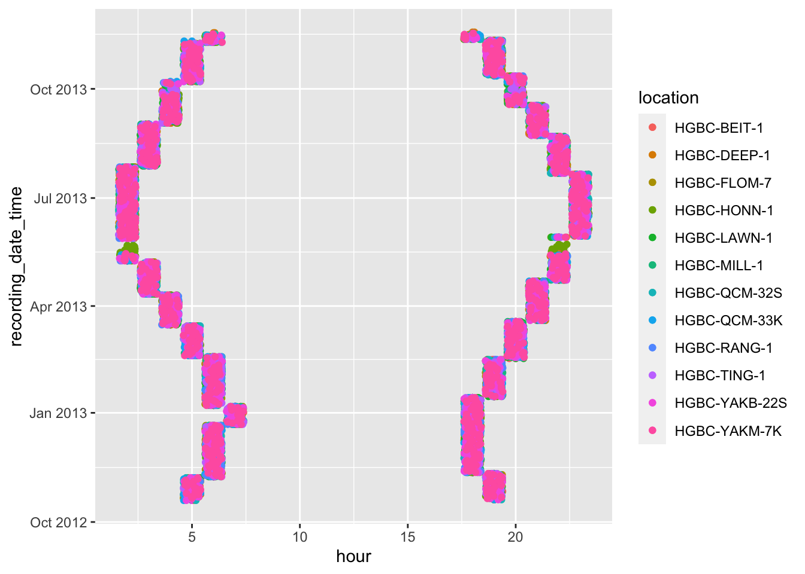
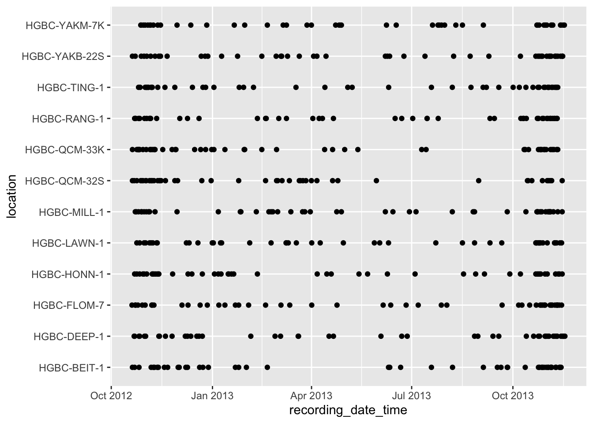
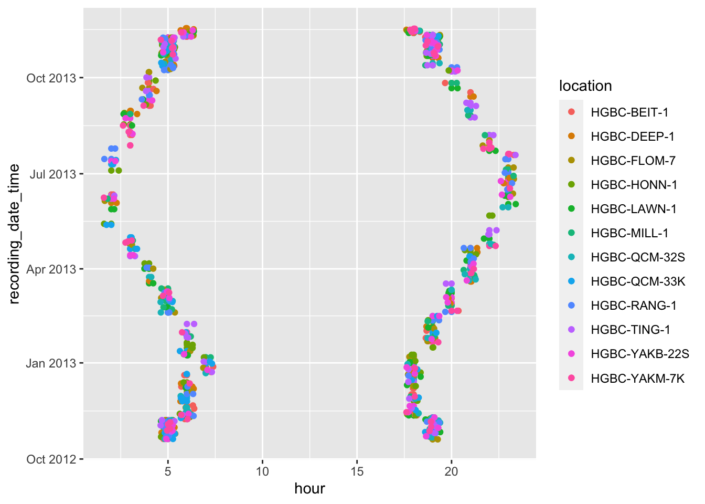
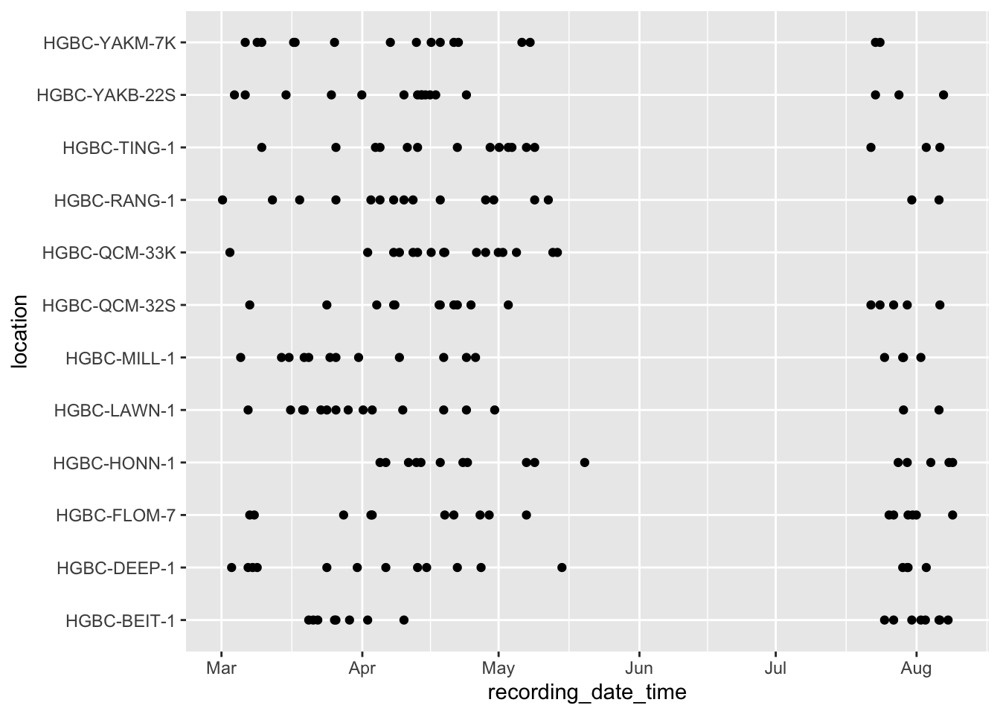
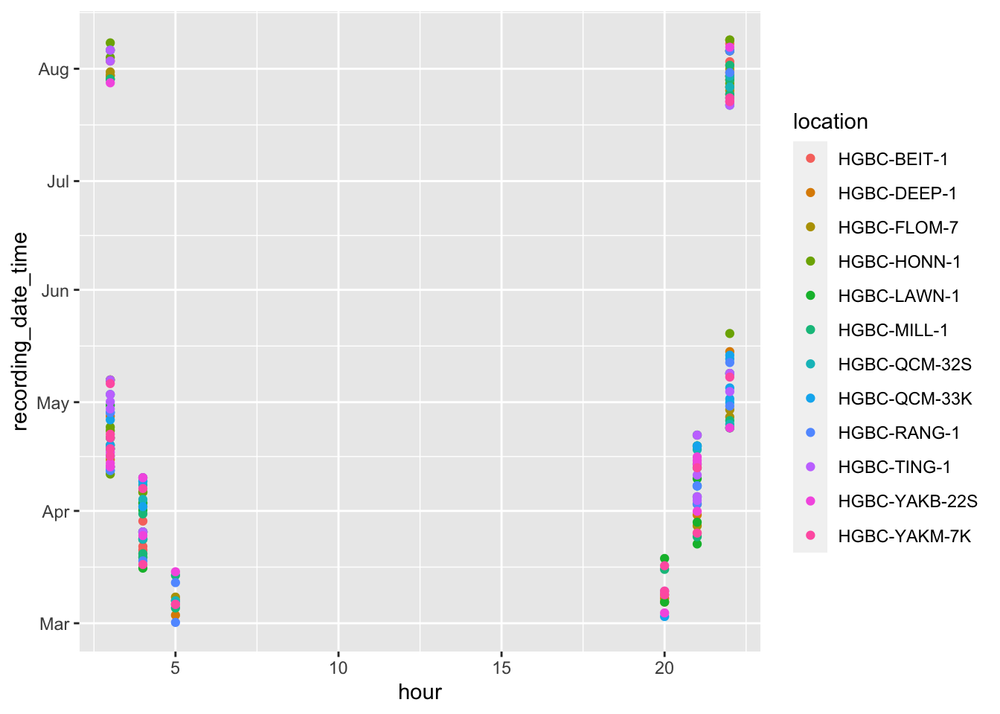

Chapter 3 Northern Goshawk and Northern Saw-whet Owl
## Warning: Missing column names filled in: 'X1' [1]## Parsed with column specification:
## cols(
## X1 = col_double(),
## file_path = col_character(),
## size_Mb = col_double(),
## file_name = col_character(),
## location = col_character(),
## recording_date_time = col_datetime(format = ""),
## file_type = col_character(),
## julian = col_double(),
## year = col_double(),
## gps_enabled = col_logical(),
## time_index = col_double(),
## length_seconds = col_double(),
## sample_rate = col_double(),
## n_channels = col_double()
## )n2 <- nswo_data %>%
mutate(fp = str_remove(file_path,"\\_d"),
year = lubridate::year(recording_date_time),
hour = lubridate::hour(recording_date_time))
ggplot(n2, aes(x=location, y=recording_date_time)) + geom_point() + coord_flip()
ggplot(n2, aes(x=recording_date_time, y=hour, color=location)) + geom_point() + geom_jitter() + coord_flip()
n3 <- n2 %>%
group_by(location, julian, hour) %>%
add_tally(name = "group") %>%
ungroup() %>%
group_by(location, group) %>%
slice_sample(n = 24, weight_by = group, replace = F)
ggplot(n3, aes(x=location, y=recording_date_time)) + geom_point() + coord_flip()
ggplot(n3, aes(x=recording_date_time, y=hour, color=location)) + geom_point() + geom_jitter() + coord_flip()
n4 <- n2 %>%
filter(julian %in% c(60:220),
hour %in% c(3:10,19:22)) %>%
group_by(location, time_index) %>%
slice_sample(n = 8, replace = F)
ggplot(n4, aes(x=location, y=recording_date_time)) + geom_point() + coord_flip()

nswo_tasks <- bind_rows(n3, n4) %>%
mutate(script = paste0("sudo ln -s ",file_path," /media/BUdata01/wildtrax_loads/nswo_ghnpr/",file_name,".",file_type))
write.csv(nswo_tasks$script, "nswo.txt", row.names=F, quote = F)
sum(nswo_data$length_seconds)/3600## [1] 16622